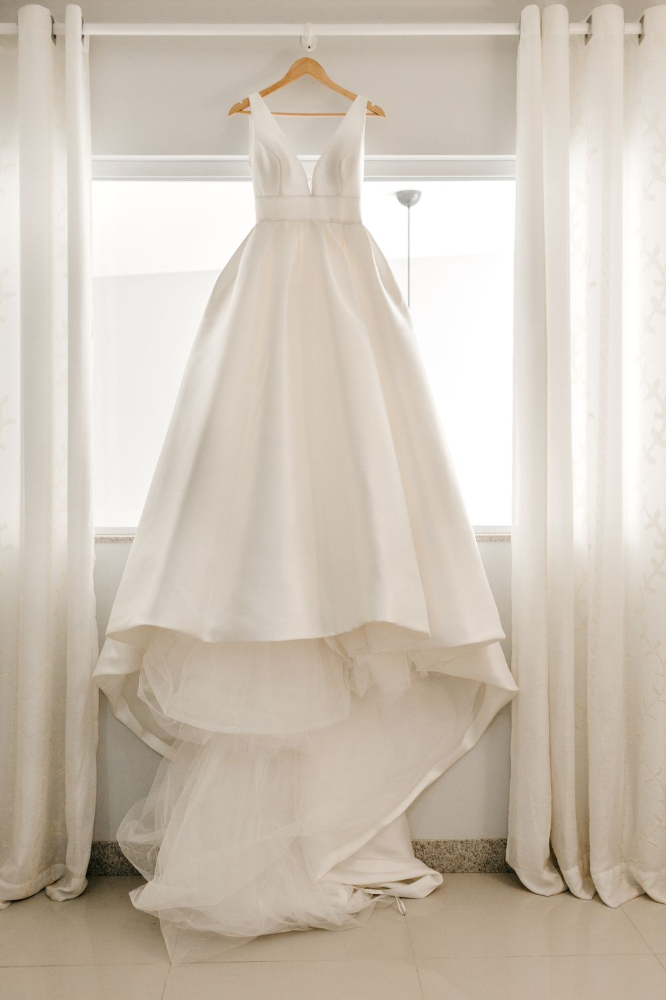
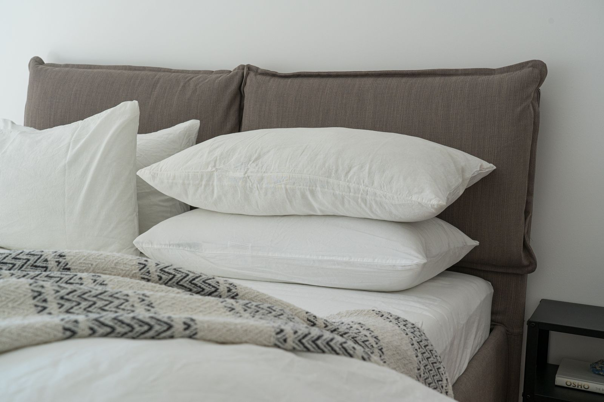
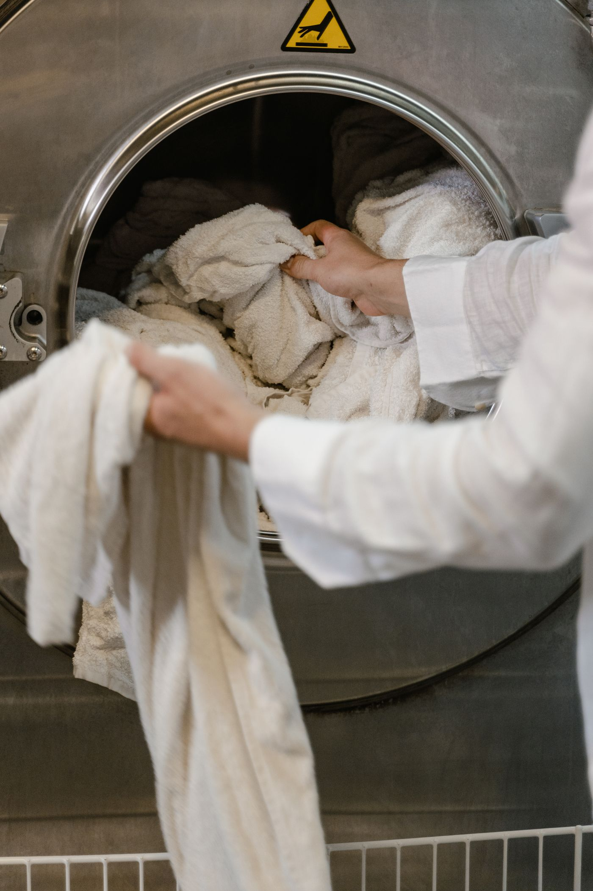
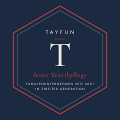

Hemden & Blusen
Gewaschen, gebügelt und auf dem Bügel – für den Alltag oder das Hemden-Abo im Büro.
Mehr zum HemdenserviceHannover-Wettbergen · Familienunternehmen seit 2001
Hemden, Anzüge, Daunendecken, Gardinen und Teppiche – sorgfältig gereinigt und auf Wunsch bei Ihnen abgeholt und zurückgebracht. In ganz Hannover.

Kleider & Brautmodeab 12,90 € Mäntel & Jackenab 18,90 €
Bettdecken & Kissenab 15,90 € Gardinenab 3,20 € pro m²
Gardinenab 3,20 € pro m²
Außerdem: Teppiche · Sofa & Polster · Wäsche & Tischwäsche · alle Leistungen von A bis Z
Leistungen
Von der Bluse bis zum Orientteppich, vom Brautkleid bis zur Pferdedecke: Wir reinigen schonend, beraten bei Flecken und empfindlichen Materialien und behandeln jedes Teil, als wäre es unser eigenes. Alle Leistungen von A bis Z
Gewaschen, gebügelt und auf dem Bügel – für den Alltag oder das Hemden-Abo im Büro.
Mehr zum HemdenserviceAnzüge, Smokings und Frackhemden, Abendkleider und Brautkleider. Schonend gereinigt, gedämpft und in Form gebracht.
Mehr zu AnzügenWollmäntel, Daunenjacken, Skianzüge und Outdoor-Kleidung – auf Wunsch mit Imprägnierung.
Daunendecken, Federbetten, Steppdecken und Kissen. Gewaschen, schonend getrocknet, aufgeschüttelt.
Lama, Alpaka, Kaschmir und Schurwolle: Naturfasern brauchen Erfahrung. Die haben wir.
Auf Wunsch hängen wir sie bei Ihnen ab, reinigen sie und hängen sie wieder auf.
Mehr zum GardinenserviceVom Velours bis zum handgeknüpften Orientteppich. Wir rollen auf, holen ab und legen wieder aus.
Mehr zur TeppichreinigungTisch- und Mangelwäsche, Bettwäsche, Handtücher und Unterwäsche – gewaschen, gemangelt, gefaltet.
Berufskleidung, Hemden-Abos, Tischwäsche für Gastronomie und feste Abholtage.
Mehr für FirmenkundenRund ums Bett
Kissen, Decken und Bettwäsche sammeln über das Jahr Schweiß, Staub und Milben. Wir waschen alles schonend, trocknen es gründlich und schütteln Daunen wieder auf.
Abhol- & Lieferservice
Mit unserem eigenen Wagen holen wir Ihre Textilien ab und bringen sie frisch gereinigt zurück – in ganz Hannover und Umgebung.

Wettbergen, Ricklingen, Oberricklingen, Mühlenberg, Bornum, Empelde. Ab 25 € Auftragswert ohne Anfahrtskosten, sonst 3,90 €.
Alle übrigen Stadtteile. Anfahrt 5,90 €, ab 50 € Auftragswert frei.
Immer ohne Anfahrtskosten.
Gardinen ab- und aufhängen sowie Teppiche aufrollen und auslegen gegen Aufpreis, je nach Aufwand.
Demnächst neu
Bald reinigen wir Polstermöbel und Teppiche direkt bei Ihnen zu Hause. Und wer selbst Hand anlegen möchte, kann sich bei uns Profi-Geräte ausleihen.
Preise
Eine Auswahl unserer Preise. Alle weiteren Teile nennen wir Ihnen gern am Telefon, für große Teppiche und Polster vorab als verbindlichen Festpreis.
| Leistung | Preis ab |
|---|---|
| Hemd, gewaschen und auf Bügel | 2,90 € |
| Hemd im 10er-Paket, je | 2,50 € |
| Bluse | 6,50 € |
| Hose oder Rock | 8,90 € |
| Anzug, zweiteilig | 19,90 € |
| Kleid, einfach | 12,90 € |
| Mantel | 18,90 € |
| Daunenjacke inkl. Imprägnierung | 27,90 € |
| Smoking | 32,90 € |
| Abendkleid | ab 49,00 € |
| Brautkleid | ab 109,00 € |
| Daunenbettdecke | 29,90 € |
| Daunenkissen | 15,90 € |
| Lama- oder Alpakadecke | 13,90 € |
| Pferdedecke | 23,90 € |
| Gardinen | 3,20 €/m² |
| Teppich, maschinell gefertigt | 14,90 €/m² |
| Orientteppich, handgeknüpft | 19,90 €/m² |
| Matratze 90 × 200 | 59,00 € |
| Polster im Laden, Sitz oder Lehne | 7,90 € |
Alle Preise inkl. MwSt. Anfahrt und Rundum-Service siehe Abholservice.
Für Firmen
Für Kanzleien, Autohäuser, Praxen, Hotels, Restaurants und Messeaussteller in Hannover übernehmen wir die Textilpflege komplett – ohne Anfahrtskosten.

Über uns
Seit 2001 ist Textilpflege unser Familienhandwerk. In Wettbergen kennen uns viele Kundinnen und Kunden seit Jahren – mit dem Abholservice kommen wir jetzt auch zu Ihnen nach Hause oder ins Büro.
„Fein“ ist für uns kein Werbewort, sondern ein Anspruch: sorgfältig, ehrlich beraten, pünktlich zurück.
Häufige Fragen
Ja, in ganz Hannover. In Wettbergen, Ricklingen, Mühlenberg und Umgebung ab 25 € Auftragswert ohne Anfahrtskosten.
Ja. Wir nehmen Gardinen und Vorhänge bei Ihnen ab, reinigen sie und hängen sie wieder auf. Der Aufpreis richtet sich nach Anzahl und Höhe der Fenster.
Ja, handgeknüpfte Teppiche waschen wir besonders schonend. Auf Wunsch rollen wir den Teppich bei Ihnen auf und legen ihn nach der Reinigung wieder aus.
Ja, und es lohnt sich: Gewaschene Daunen werden wieder bauschig und hygienisch sauber. Wir trocknen schonend und schütteln die Füllung auf.
Das hängt vom Teil ab. Fragen Sie uns gern – wir nennen Ihnen bei der Annahme den Abholtermin.
Ja, mit Hemden-Abo, Sammelrechnung und ohne Anfahrtskosten. Rufen Sie uns an oder nutzen Sie das Anfrageformular.
Kontakt